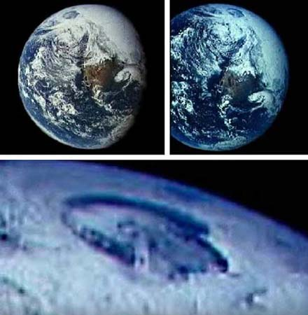
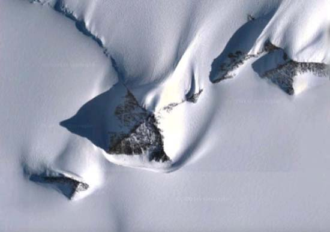

Durante muchos siglos, la humanidad ha soñado con la existencia de mundos internos. Numerosos escritores se han inspirado en esta idea, como el creador del mundialmente famoso personaje de Tarzán Edgar Rice Burroughs (Aventura en el centro de la Tierra, 1914), Edgar Allan Poe (La narración de Arthur Gordon Pym, 1838) y, el más famoso de todos, Julio Verne con su novela Viaje al Centro de la Tierra publicada en 1864, la cual ha sido adaptada en numerosas ocasiones, tanto para teatro como para el cine.
Miles de teóricos de la conspiración llevan años debatiendo lo que se conoce comúnmente como “uno de los grandes secretos de nuestra historia”. Son muchos los conspiranoicos que aseguran que las imágenes de satélite de Google Earth han sido manipuladas para ocultar la existencia de grandes agujeros, entradas secretas a un verdadero mundo en el interior de la Tierra.
Pero ahora teóricos de la conspiración aseguran haber encontrado imágenes de la NASA que confirman la controvertida teoría de la Tierra Hueca.
Tyler Glockner, ufólogo y responsable del popular canal de YouTube secureteam10, en un vídeo subido a Internet el 20 de mayo de 2016 titulado “NASA Caught HIDING Something At North Pole! Hollow Earth?" muestra imágenes de satélite nunca vistas antes, sin censura, que prueban como la NASA ha estado ocultando la evidencia de que hay un acceso que conduce a la “Tierra interna”.
“Cada imagen de satélite que tenemos del Polo Norte muestra un enorme agujero”, según explica Glockner.
Según la teoría de la conspiración, la NASA borra rápidamente todas las imágenes de sus sitios web que muestran un enorme agujero en el Polo Norte. Por lo tanto, las únicas imágenes del Polo Norte disponibles al público son los que muestran una zona oscura, simplemente para ocultar la existencia de estos accesos.

Como ya publicamos en “Evidencias de la existencia de la Tierra Hueca y seres intraterrestres” hay una entrada en el Polo Norte, así como en el Polo Sur, a través del cual se puede entrar al interior de la Tierra. Y es que la Tierra hueca, tiene un sol y una civilización tecnológicamente avanzada.
Pero lo más sorprendente es que los gobiernos y la NASA son conscientes de la presencia de estas entradas en los polos, pero han tratado de encubrir todas las evidencias. Glockner recordó en su vídeo que el Almirante Richard E. Byrd encontró una de estas entradas y consiguió viajar a la Tierra interna.
En sus diarios escritos en 1940, contenían un relato sobre su viaje al interior de la Tierra y como vio exuberante vegetación, lagos, montañas y animales prehistóricos. Pero lo que más le sorprendió fue que encontró civilizaciones avanzadas. Pero el Almirante Byrd no ha sido el único en haber viajado a estos lugares imposibles.
El marinero alemán Karl Unger, también consiguió entrar al interior de la Tierra en 1943, durante una expedición con submarinos hasta el Polo Sur. Unger encontró una civilización avanzada en una isla llamada “Rainbow Island”. Incluso los conspiranoicos creen que el propio Adolf Hitler logro escapar al centro de la Tierra.

Son muchos los relatos que parecen demostrar la existencia de accesos al interior de la Tierra. Pero por primera vez unas imágenes de la NASA las muestran. Sin que la humanidad lo sepa, debajo de nuestros pies habita una civilización avanzada tecnológicamente, seres que van más allá de lo que podemos comprender, y que por alguna razón que desconocemos continúa ocultado de nosotros. Y es en este último punto que comienza otra controversia, ya que algunos creen que tarde o temprano los seres intraterrestres subirán del interior de la Tierra a la superficie, invadiendo nuestro espacio y utilizándonos de esclavos. Y parece ser que ese día está cerca, ya sea mediante una falsa invasión extraterrestre o con la segunda venida de cristo.